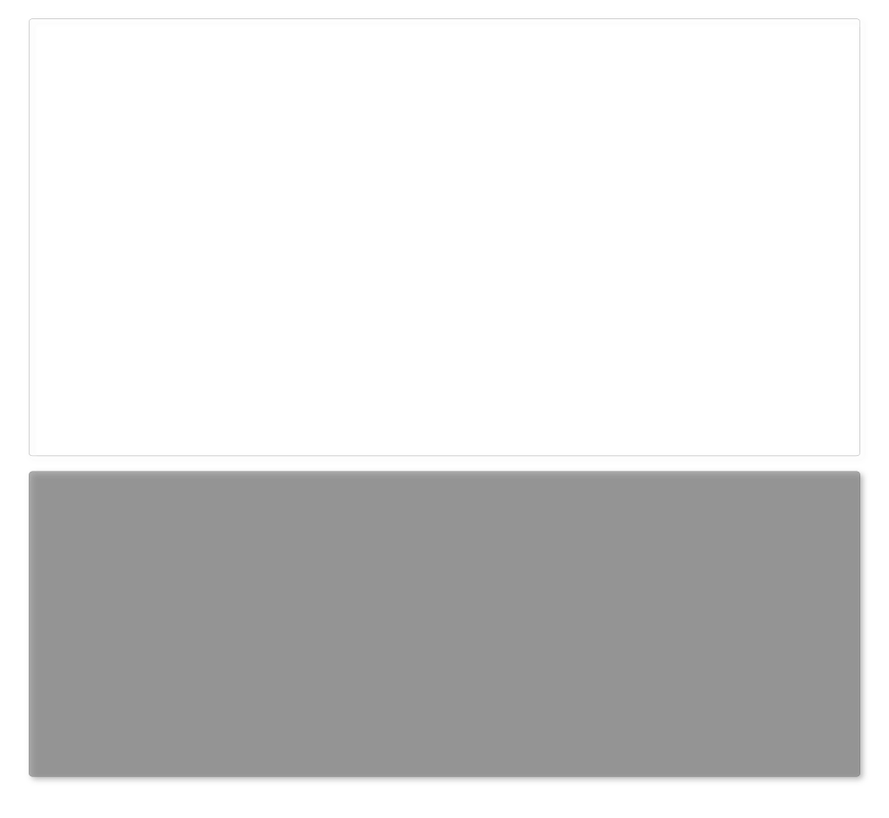

Find the Field
Your responses become the map.

Add a response below to begin building your field. Drag ideas into relation.
Zone
Themes
Initial question
Reflection
Category
Response
Response
Term
+
Clear current entry
Clear map
Download diagram PNG
×